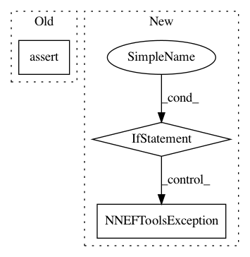

b6b2efd17e1c2c506622cc4fc181f5cc0d205cf4,nnef_tools/io/nnef/nnef_io.py,,_write_weights,#Any#Any#Any#,337
Before Change
write_nnef_tensor(filename=os.path.join(dir_path, tensor.label + ".dat"),
array=np.asarray(tensor.data, order="C"))
elif raise_on_missing_weight:
assert False, "Missing value for variable: {}".format(tensor.name)
def read_nnef_tensor(filename):
with open(filename, "rb") as file:
After Change
if tensor.data.size == tensor.count:
write_nnef_tensor(filename=os.path.join(dir_path, tensor.label + ".dat"),
array=np.asarray(tensor.data, order="C"))
elif tensor.data.size == 0:
if raise_on_missing_weight:
utils.NNEFToolsException("Missing value for variable: {}".format(tensor.name))
else:
utils.NNEFToolsException(
"Invalid data size for variable: {}, expected: {}, got: {}".format(tensor.name,
tensor.count,
tensor.data.size))
def read_nnef_tensor(filename):
with open(filename, "rb") as file:
In pattern: SUPERPATTERN
Frequency: 3
Non-data size: 3
Instances
Project Name: KhronosGroup/NNEF-Tools
Commit Name: b6b2efd17e1c2c506622cc4fc181f5cc0d205cf4
Time: 2019-06-05
Author: tamas.danyluk2@gmail.com
File Name: nnef_tools/io/nnef/nnef_io.py
Class Name:
Method Name: _write_weights
Project Name: KhronosGroup/NNEF-Tools
Commit Name: 0c6c8a13119f5de5682436e05cf0db63978109be
Time: 2019-07-11
Author: tamas.danyluk2@gmail.com
File Name: nnef_tools/conversion/tensorflow/tf_pb_to_tf_py.py
Class Name:
Method Name: evaluate_and_convert
Project Name: KhronosGroup/NNEF-Tools
Commit Name: f6c5fda0653e8c00b2dbe85cecb1280eeaa2feaa
Time: 2019-05-23
Author: tamas.danyluk@aimotive.com
File Name: nnef_tools/io/nnef/nnef_io.py
Class Name:
Method Name: read